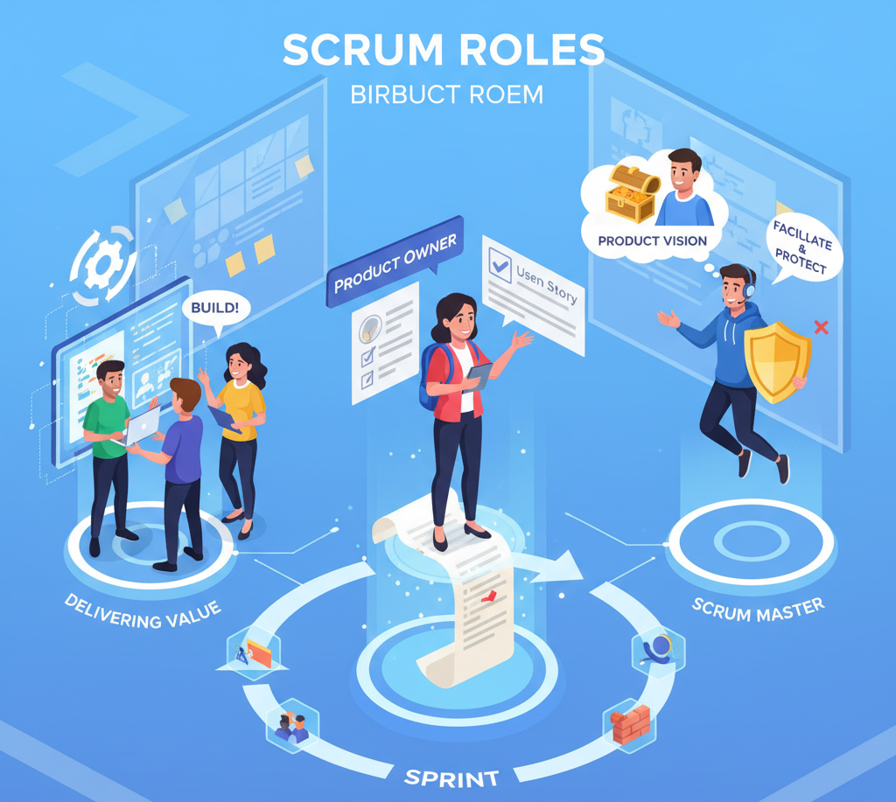
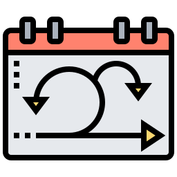
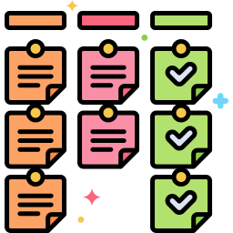

FUNDAMENTOS
+5 XP

¿QUÉ ES SCRUM?
Scrum es un marco de trabajo ágil que organiza el desarrollo en ciclos cortos llamados sprints, fomentando la colaboración, mejora continua y entrega rápida de valor.
Transparencia
Inspección
Adaptación
EQUIPO
+10 XP

ROLES EN SCRUM
Product Owner
Define lo que se necesita y prioriza el trabajo.
Gestión Backlog
Definición Valor
Decisión Final
Scrum Master
Elimina obstáculos y guía al equipo.
Facilitación
Coaching
Protección
Equipo Desarrollo
Construye el producto de forma colaborativa.
Auto-organización
Entrega Valor
Mejora Continua
CICLOS
+15 XP

EL SPRINT
Un sprint dura de 2 a 4 semanas y termina con un incremento funcional del producto listo para revisión.
Planificación
1-2 días
→
Ejecución
2-4 semanas
→
Revisión
2-4 horas
→
Retrospectiva
1-2 horas
EVENTOS
+10 XP

EVENTOS CLAVE
Daily Scrum
Reunión diaria de 15 min para planificar el día
15 min
Revisión de Sprint
Presentación del avance al final del sprint
2-4 horas
Retrospectiva
Reflexión para mejorar el próximo ciclo
1-2 horas
HERRAMIENTAS
+15 XP
ARTEFACTOS SCRUM
Product Backlog
Lista priorizada de todo lo que el producto necesita
Product Owner
Sprint Backlog
Trabajo seleccionado para el sprint actual
Equipo Desarrollo
Incremento
Resultado funcional listo para entregar
Stakeholders
MEJORES PRÁCTICAS
+20 XP
BENEFICIOS SCRUM
Entrega continua de valor
Comunicación constante
Adaptación rápida a cambios
Mayor transparencia
Colaboración mejorada
TIPS SCRUM MASTER
Usa tableros visuales Kanban
Reuniones cortas y efectivas
Prioriza valor para el cliente
Promueve auto-organización
Mide velocidad del equipo

Scrum Master Online
¡Hola! Soy tu coach Scrum. Haz clic en las tarjetas para dominar el framework ágil.